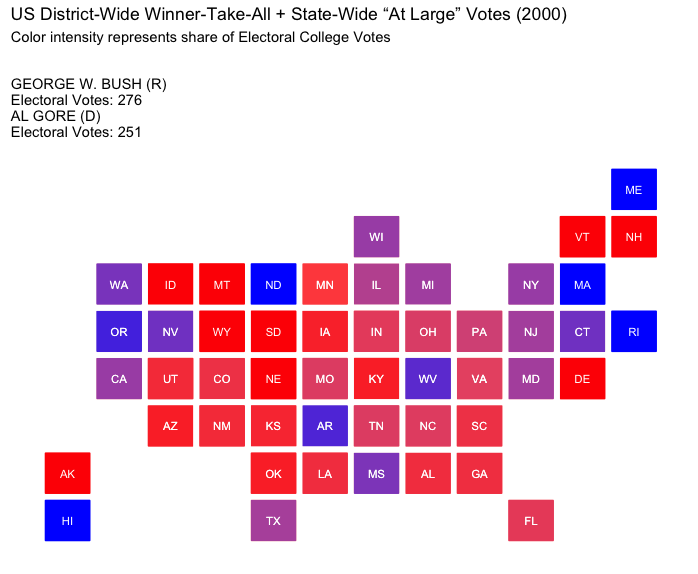
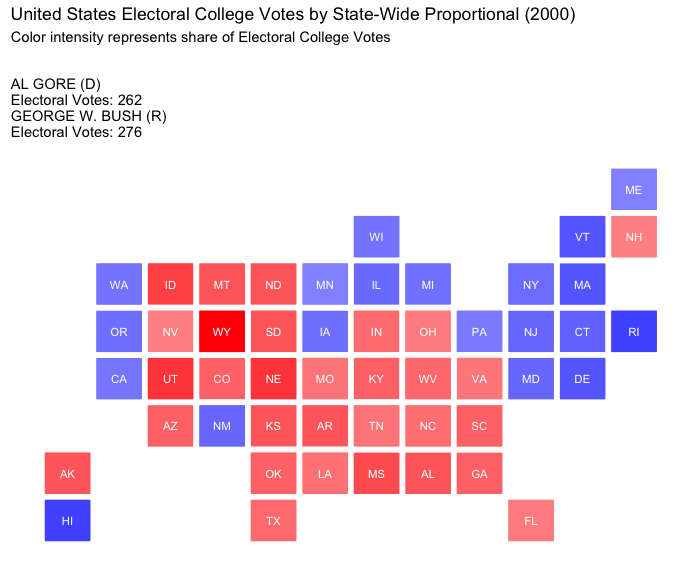
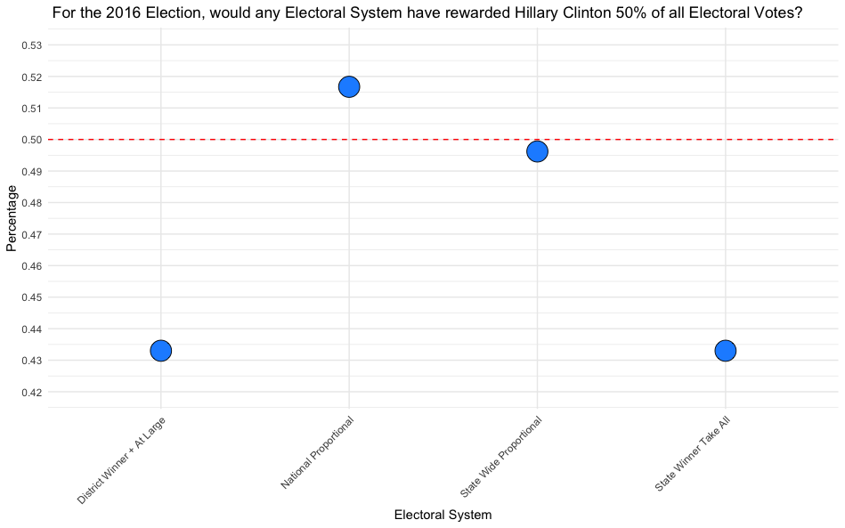

The Electoral College Dilemma: Tradition, Tension, and the Future of American Democracy
by Jason Amey
The Electoral College is one of the most misunderstood components of the American political system. Rooted in the Constitutional principle of federalism, the Electoral College is designed to balance power by ensuring that both individual states and the overall population have a voice in electing the nation’s leader.
This approach emphasizes the importance of state sovereignty, reflecting the framers’ intent to respect the rights and influence of each state within a diverse and expansive union. This system requires presidential candidates to seek support across a wide geographic range, ensuring that the voices of smaller or less populous states are not dominated by larger population centers.
Recently the Electoral College has become an increasingly contentious, particularly as modern elections have seen candidates win the presidency without winning the popular vote. This disconnect in recent years has raised questions about the system’s fairness and the extent to which it reflects the will of the people.
For many American voters, it remains unjust that a candidate who secures the majority of votes nationally can still lose the presidency. This reality has engendered disenfranchisement among voters who feel their voices are increasingly insignificant in choosing a President.
A segment of this disenchantment stems from the difficulty in changing our constitutional system. Changing the Electoral College is a complex task, not only because it would require a constitutional amendment, but also because many constituencies currently benefit from this arrangement. States that hold a disproportionate influence under the Electoral College system are unlikely to support a departure from the Electoral College beacuse it would reduce their electoral power and political significance.
Amending the Constitution demands broad consensus—a nearly impossible level of national agreement that is exceedingly rare in today’s polarized political climate. Thus, while many Americans express a desire to reform or eliminate the Electoral College, the practical and political barriers to doing so are aguably insurmountable.
The ongoing use of the Electoral College, despite its oft-misalignment with the popular vote, presents a significant challenge to the perceived responsiveness of elected leaders to the public’s democratic wishes. When candidates who do not enjoy the majority’s support are elevated to the presidency, it can strain the public’s trust in our political system. This tension between majority rule and the structure of the Electoral College poses serious questions for the future of American democracy, as it risks diminishing the public’s faith in the electoral process and the legitimacy of its political leaders.
To explore the dynamics of the Electoral College, a data analysis was conducted using electoral data from the MIT Election Data and Science Lab, which provides detailed voting records across U.S. House elections from 1976 to 2022.1 This dataset offers insights into historical voting patterns and party performance at the district level, essential for understanding shifts in electoral influence over time. This data was with congressional shapefiles from UCLA’s PoliSci Mapping Center2 and the U.S. Census Bureau’s TIGER/Line files.3 These resources enable a comprehensive analysis of the Electoral College system, highlighting shifts in population and the impact districting commands over electoral outcomes.
This project uses packages readr, dplyr, tidy, ggplot2, sf, stringr, statebins, scales,maps
> show the code for data preparation
library(readr)
library(dplyr)
library(tidyr)
library(ggplot2)
library(sf)
library(stringr)
library(statebins)
library(scales)
library(maps)
# Sourced data
ELECTION_DATA_HOUSE <- read_csv("data/mp03/dataversefiles/1976-2022-house.csv")
ELECTION_DATA_HOUSE <- ELECTION_DATA_HOUSE |>
filter(!is.na(party))
ELECTION_DATA_PRESIDENT <- read_csv("data/mp03/dataversefiles/1976-2020-president.csv")
ELECTION_DATA_PRESIDENT <- ELECTION_DATA_PRESIDENT |>
filter(!is.na(candidate) & !is.na(party_detailed))
# Function to download shapefiles UCLA’s PoliSci Mapping Center, 95 to
# 112 representsrelevant Congressional Sessions
congress_shapefiles_ucla <- function(start = 95, end = 112) {
BASE_URL <- "https://cdmaps.polisci.ucla.edu/shp/districts"
if (!dir.exists("data/mp03/congress_shapefiles")) {
dir.create("data/mp03/congress_shapefiles", recursive = TRUE)
}
for (congress in start:end) {
# Requires leading zeros
congress_str <- sprintf("%03d", congress)
file_url <- paste0(BASE_URL, congress_str, ".zip")
dest_file <- paste0("data/mp03/congress_shapefiles/congress_", congress_str, "_shapefile.zip")
# Prevent re-downloading
if (!file.exists(dest_file)) {
tryCatch({
download.file(file_url, destfile = dest_file, mode = "wb")
message("Downloaded shapefile for Congress ", congress_str)
}, error = function(e) {
message("Failed to download for Congress ", congress_str, ": ", e)
})
} else {
message("File for Congress ", congress_str, " already exists. Skipping download.")
}
}
}
# Run function
congress_shapefiles_ucla()
# Function to download shapefiles from the U.S. Census Bureau’s TIGER/Line Shapefiles
congress_shapefiles_census <- function(start_year = 2013, end_year = 2023) {
BASE_URL <- "https://www2.census.gov/geo/tiger/TIGER"
# Create the download directory if it doesn’t exist
if (!dir.exists("data/mp03/census_congress_shapefiles")) {
dir.create("data/census_congress_shapefiles", recursive = TRUE)
}
# Determine Congress numbers based on years
congress_numbers <- seq(113, 113 + (end_year - start_year) / 2, by = 1)
years <- seq(start_year, end_year, by = 2)
for (i in seq_along(years)) {
year <- years[i]
congress <- congress_numbers[i]
# Format as 'cd113', 'cd114', etc.
congress_str <- sprintf("cd%d", congress)
file_url <- paste0(BASE_URL, year, "/CD/tl_", year, "_us_", congress_str, ".zip")
dest_file <- paste0("data/mp03/census_congress_shapefiles/tl_", year, "_us_", congress_str, ".zip")
#Prevent re-downloading
if (!file.exists(dest_file)) {
tryCatch({
download.file(file_url, destfile = dest_file, mode = "wb")
print("Downloaded shapefile for ", congress_str, " (Year ", year, ")")
}, error = function(e) {
print("Failed to download for ", congress_str, " (Year ", year, "): ", e)
})
} else {
message("File for ", congress_str, " (Year ", year, ") already exists. Skipping download.")
}
}
}
#Run function
congress_shapefiles_census()How has the Electoral College changed since 1976?
The past 40 years have seen dramatic demographic and economic shifts in the United States, with the “Sunbelt” region experiencing significant population growth. Factors such as warm climates, a lower cost of living and growing job opportunities have all contributed to this population transformation. Cities like Phoenix, Dallas, Houston, and Atlanta have expanded rapidly, becoming economic powerhouses that attract internal migration.4 This trend has boosted the political influence of the Sunbelt states, particularly in presidential elections, as their share of the Electoral College votes has grown in proportion to their population increases.
In contrast, the Northeast and Rust Belt states have faced steady population declines. The Rust Belt continues to grapple with the economic fallout from the decline in manufacturing5. The Northeast, once a densely populated region driving much of the nation’s political power, has also seen a slower growth rate due to higher costs of living and an unwelcome, cooler climate. States like New York, Ohio, Pennsylvania, and Michigan have all lost congressional seats6—and, by extension, Electoral College votes—in the face of a southward shift in national demographics.
The impact on the Electoral College reflects these changes, as the Sunbelt’s increasing population has translated into greater political clout. Every ten years, the U.S. Census triggers a reapportionment of congressional seats, redistributing the 435 seats in the House of Representatives—and thus Electoral College votes—based on population changes.
This dynamic remains topical as commentary last-week immediately following Donald Trump’s significant electoral victory led a popular Conservative commentator to remark on the conintued diminished influence of both the Rust Belt and the American North East, and its traditional bases of power among the Democratic Party7:
What are the states to lose the most Electoral College votes since 1976?
| State | 1976 | 2022 | Change |
|---|---|---|---|
| New York | 41 | 28 | -13 |
| Ohio | 25 | 17 | -8 |
| Pennsylvania | 27 | 19 | -8 |
| Illinois | 26 | 19 | -7 |
| Michigan | 21 | 15 | -6 |
What are the states to gain the most Electoral College votes since 1976?
| State | 1976 | 2022 | Change |
|---|---|---|---|
| Texas | 26 | 40 | 14 |
| Florida | 17 | 30 | 13 |
| California | 45 | 54 | 9 |
| Arizona | 6 | 11 | 5 |
| Georgia | 12 | 16 | 4 |
Despite the Sunbelt’s rising population and the corresponding increase in Electoral College votes, a paradox exists: many of these rapidly growing Sunbelt states lack the political clout associated with “swing states.”8
In the Electoral College, political influence often hinges not only on a state’s population, but on its competitiveness in presidential elections. States like Texas and Florida, though gaining in electoral votes, are often reliably partisan (both are heavily Republican), which can diminish the attention they receive compared to smaller yet more unpredictable states like Pennsylvania or Wisconsin.
This “swing state” phenomenon means that candidates prioritize states with narrower margins, where votes are likelier to tip the election, giving smaller, competitive states a unique power in the electoral process that even populous states in the Sunbelt do not always share.>show the code
# Get data for 1976 and 2022
electoral_votes_76_22 <- ELECTION_DATA_HOUSE |>
filter(year == 1976 | year == 2022 ) |>
group_by(year, state) |>
summarize(votes = n_distinct(district) + 2) |>
pivot_wider(names_from = year, values_from = votes) |>
mutate(change = `2022` - `1976`)
# View states that have lost the most seats
vote_data <- electoral_votes_76_22 |>
arrange(change)
# View states that have gained the most seats
electoral_votes_76_22 |>
arrange(desc(change))
# Prepare map data and convert state names to match your data
us_states <- map_data("state") |>
mutate(region = toupper(region))
# Join map data with your data on state names
map_data_combined <- us_states |>
left_join(vote_data, by = c("region" = "state"))
# Plot the heatmap
ggplot(map_data_combined, aes(long, lat, group = group, fill = change)) +
geom_polygon(color = "white") +
scale_fill_gradient2(low = "blue", mid = "gray", high = "red", midpoint = 0,
name = "Change in Seats") +
coord_fixed(1.3) +
labs(title = "Change in Congressional Seats (1976 to 2022)",
subtitle = "Positive values indicate gain in seats; negative values indicate loss") +
theme_minimal() +
theme(
axis.text = element_blank(),
axis.title = element_blank(),
axis.ticks = element_blank(),
panel.grid = element_blank(),
panel.background = element_blank()
)The Fusion Phenomenon
Fusion voting, also known as cross-endorsement, is an electoral practice that allows a candidate to appear on the ballot under multiple party lines, thereby consolidating votes from different political bases. This approach enables third parties to endorse a major-party candidate, allowing voters to support a candidate’s platform through the values or policies associated with a smaller, often more ideologically-focused party. In practice, fusion voting can increase a candidate’s visibility while empowering smaller parties to influence major-party agendas.9
In New York City, fusion voting originally began in the 1930’s as a strategy to challenge Tammany Hall. Since then, many fusion-enabled parties have become important fixtures in New York area politics. For one, The Working Families Party has frequently endorsed progressive Democratic candidates while giving voters an alternative way to support candidates who align with specific labor and social equity issues. Likewise, The Conservative Party line gives voters a direct voice to amplify their commitment to limited government and social conservatism. All told, the fusion approach has been unique in New York City’s local elections, shaping policy conversations and reinforcing the presence of alternative political values within a largely two-party system.10
What follows is a unique table of instances where a candidate only won their election with 3rd party support. The Highest % column charts the losing candidate’s highest total of votes from their main policitical party - but it not being enough to exceed the winning candidate’s fusion totals.
| Year | State | District | Winning Candidate | Party | Losing Candidate | Party | Highest % |
|---|---|---|---|---|---|---|---|
| 1980 | NY | 3 | Gregory W Carman | Conservative, Republican | Jerome A Ambro Jr | Democrat, Right To Life | 0.429 |
| 1980 | NY | 6 | John LeBoutillier | Conservative, Republican, Right To Life | Lester L Wolff | Democrat, Liberal | 0.437 |
| 1986 | NY | 27 | George C Wortley | Conservative, Republican | Rosemary S Pooler | Democrat, Effective Congress | 0.483 |
| 1994 | NY | 1 | Michael P Forbes | Conservative, Republican, Right To Life | George J Hochbrueckner | Democrat, Long Island First | 0.428 |
| 1996 | NY | 1 | Michael P Forbes | Conservative, Independence, Republican, Right To Life | Nora L Bredes | Democrat, Save Medicare | 0.398 |
| 1996 | NY | 30 | Jack Quinn | Conservative, Freedom, Independence, Republican | Francis J Pordum | Democrat, Protect Seniors | 0.405 |
| 2006 | NY | 25 | James T Walsh | Conservative, Independence, Republican | Dan Maffei | Democrat, Working Families | 0.443 |
| 2006 | NY | 29 | John R “Randy” Kuhl Jr | Conservative, Independence, Republican | Eric J Massa | Democrat, Working Families | 0.436 |
| 2012 | NY | 27 | Chris Collins | Conservative, Republican | Kathleen C Hochul | Democrat, Working Families | 0.425 |
| 2018 | NY | 1 | Lee M Zeldin | Conservative, Independence, Reform, Republican | Perry Gershon | Democrat, Working Families | 0.460 |
| 2018 | NY | 24 | John M Katko | Conservative, Independence, Reform, Republican | Dana Balter | Democrat, Women’s Equality, Working Families | 0.445 |
| 2018 | NY | 27 | Chris Collins | Conservative, Independence, Republican | Nathan D McMurray | Democrat, Women’s Equality, Working Families | 0.449 |
| 2022 | NY | 4 | Anthony P D’Esposito | Republican, Conservative | Laura A Gillen | Democrat | 0.470 |
| 2022 | NY | 17 | Michael V Lawler | Republican, Conservative | Sean Patrick Maloney | Democrat, Working Families | 0.458 |
| 2022 | NY | 22 | Brandon M Williams | Republican, Conservative | Francis Conole | Democrat | 0.485 |
> show the code
# Filter House election data for fusion elections, calculate percentages and create unique ID
fusion_elections <- ELECTION_DATA_HOUSE |>
filter(fusion_ticket == TRUE) |>
mutate(percentage = candidatevotes / totalvotes, race_id = paste0(state_po, year, district))
# Calculate total winnine percentage
winner_percentage <- fusion_elections |>
group_by(race_id, candidate) |>
summarize(total_vote = sum(percentage)) |>
ungroup()
# Count races for a given ID and filter out only competitve races
winner_percentage <- winner_percentage |>
add_count(race_id, name = "race_count") |>
filter(race_count > 1) |>
select(-race_count)
# Create boolean for variable name `winner`
winners_added <- winner_percentage |>
group_by(race_id) |>
mutate(winner = (total_vote == max(total_vote))) |>
ungroup()
# Join datasets
fusion_elections <- fusion_elections |>
inner_join(winners_added, by=c("race_id", "candidate")) |>
select(year, state, state_po, district, candidate, party, percentage, race_id, total_vote, winner)
# Identify individuals who recieved the highest single percentage, but lost race
fusion_election_IDs <- fusion_elections |>
group_by(race_id) |>
arrange(desc(percentage)) |>
slice(1) |>
filter(winner == FALSE) |>
pull(race_id)
# Recreate dataset with just unique elections with fusion winners (losers)
final_data <- fusion_elections |>
filter(race_id %in% fusion_election_IDs & !is.na(party))
# Identify all the candidates and their parties in these unique fusion instances
result <- final_data |>
group_by(year, state, district) |>
summarise(
winning_candidate = candidate[winner == TRUE],
winning_party = paste(unique(party[winner == TRUE]), collapse = ", "),
losing_candidate = candidate[which.max((!winner) * percentage)],
losing_party = paste(unique(party[winner == FALSE]), collapse = ", "),
highest_losing_percentage = max(percentage[winner == FALSE], na.rm = TRUE),
.groups = 'drop'
)
# Print output for table formatting
print(result, n = 100)House vs. Presidential Candidate Support in Recent U.S Elections
These scores represent the standardized differences in voter support between Democratic and Republican candidates in House versus Presidential elections for each election year. This examination represents whether in a given state and year a party’s House candidates received a higher or lower percentage of votes than the party’s Presidential candidate, indicating voter preferences that may diverge between congressional and national races. The standardized score highlights years with especially strong or weak alignment between House and Presidential support. Positive scores indicate years when House candidates outperformed Presidential candidates, while negative scores suggest the opposite.
High Positive Scores for Democrats (1984, 1980, 1992):
The Democratic Party shows substantial positive discrepancies in years like 1984, 1980, and 1992, suggesting that Democratic House candidates outperformed the Democratic Presidential candidate by a notable margin in these years. 1980 and 1984 reflect the transformative political strength of Ronald Reagan, arguably one of the most consequential Presidential figures of the last 50 years.11 In 1992, a strong third-party showing by Ross Perot may have influenced voting patterns, with many voters possibly splitting their votes between Perot and their local Democratic House Representatives.
High Negative Scores for Republicans (1988, 1984, 1976):
In 1988, 1984, and 1976, Republicans have significant negative scores, suggesting that in these years, Republican House candidates underperformed relative to the Presidential candidate. This might indicate that the Presidential candidate was particularly appealing, drawing votes that House candidates could not capture as effectively.
This trend suggests that in certain election years, voters may have been inclined toward a Republican President but were more mixed in their support for Republicans in the House, as was the case in 1988 and 1984 years when the GOP ran strong candidates atop their tickets. The 1976 results are likely a reflection of broader voter disenchantment with the Republican Party post-Watergate in the ensuing years and the need to re-build their national stature among voters.
Low Discrepancy Years (Near Zero Scores):
Years like 2004 (Democrat), 2000 (Republican), and 2012 (Republican) have scores close to zero, indicating minimal discrepancies between the public’s preference for President and the House within those years. In such years, voter alignment between Presidential and House races was more consistent, reflecting lower levels of split-ticket voting or greater alignment in perceived candidate appeal and party policies across both levels. These years most likely signaled the rise of growing polarization of the American electorate as seen in recent elections.
Recent Years (2008–2020):
In recent years, such as 2008, 2016, and 2020, both parties show relatively low scores, suggesting less discrepancy in voter preferences between the House and Presidential candidates. This trend reflects growing political polarization, with fewer voters splitting their votes across parties. The increased partisan consistency among voters has led to a decline in split-ticket voting, a phenomenon that has been well-documented in studies on electoral polarization.12
> show the code
# Remove 3rd party candidates from presidential data
election_president_r_d <- ELECTION_DATA_PRESIDENT |>
filter(party_detailed == "REPUBLICAN" | party_detailed == "DEMOCRAT" )
# Calculate total votes a presidential candidate received, total vote in race and create unique ID
sum_president_votes_r_d <- election_president_r_d |>
group_by(year, state, state_po, party_detailed, candidate) |>
summarize(
candidate_votes = sum(candidatevotes, na.rm = TRUE),
total_votes = max(totalvotes, na.rm = TRUE)
) |>
ungroup() |>
mutate(id = paste(year, state_po, party_detailed, sep = "_"), pres_percentage = candidate_votes / total_votes) |>
rename(
pres_candidate_votes = candidate_votes,
pres_total_votes = total_votes
)
# Vector for presidential election years
PRESIDENTIAL_YEARS <- seq(1976, 2020, by = 4)
# Isolate house races that occured in presidential years and count votes for each state
total_votes_per_state <- ELECTION_DATA_HOUSE |>
filter(year %in% PRESIDENTIAL_YEARS & (party == "REPUBLICAN" | party == "DEMOCRAT")) |>
group_by(year, state, state_po) |>
summarize(total_votes = unique(totalvotes, na.rm = TRUE) |> sum()) |>
ungroup()
# Sum candidate votes, join total_votes_per_state and calculate percentage from total votes
sum_house_votes_r_d <- ELECTION_DATA_HOUSE |>
filter(party %in% c("DEMOCRAT", "REPUBLICAN") & year %in% PRESIDENTIAL_YEARS) |>
group_by(year, state, state_po, party) |>
summarize(candidate_votes = sum(candidatevotes, na.rm = TRUE)) |>
ungroup() |>
left_join(total_votes_per_state, by = c("year", "state", "state_po")) |>
mutate(
id = paste(year, state_po, party, sep = "_"),
house_percentage = candidate_votes / total_votes
) |>
rename(
house_candidate_votes = candidate_votes,
house_total_votes = total_votes
) |>
select(id, house_candidate_votes, house_total_votes, house_percentage)
# Calculate differences from house races percentages and presidential races
state_vote_counts <- sum_president_votes_r_d |>
left_join(sum_house_votes_r_d, by = "id") |>
mutate(dif = house_percentage - pres_percentage)
# Group these differences by state
state_vote_diff_state_score <- state_vote_counts |>
group_by(state, party_detailed) |>
summarize(state_dif = mean(dif, na.rm = TRUE))
# Calculate differences by party
state_vote_diff_pres_house <- state_vote_counts |>
group_by(year, party_detailed) |>
summarize(avg_dif = mean(dif, na.rm = TRUE))
# Generate standardize numbers for comparisons
SD <- sd(state_vote_diff_pres_house$avg_dif)
MEAN <- mean(state_vote_diff_pres_house$avg_dif)
# Create a score metric
state_vote_diff_total_score <- state_vote_diff_pres_house |>
mutate(score = (avg_dif - MEAN) / SD) |>
arrange(desc(score))
# Prepare data for plot
data <- state_vote_diff_total_score |>
select(Year = year, Party = party_detailed, Score = score) |>
mutate(
Party = ifelse(Party == "DEMOCRAT", "Democrat", "Republican")
)
# Chart differences in House vote vs. Presidental vote from 1976 - 2020
ggplot(data, aes(x = factor(Year), y = Score, fill = Party)) +
geom_bar(stat = "identity", position = "dodge", width = 0.7) +
scale_fill_manual(values = c("Democrat" = "blue", "Republican" = "red")) +
labs(
title = "Party Score by Year (1976 - 2020)",
x = "Year",
y = "Score",
fill = "Party"
) +
theme_minimal() +
theme(
axis.text.x = element_text(angle = 45, hjust = 1),
legend.position = "top"
)
Adjusting Data in Anticipation for Maping our Findings
What follows are the re-adjustment of our data and inclusion of shapefiles to map out conclusions about our electoral data.
> show code for .shp files
# Identify main directory
DIRECTORY <- paste(getwd(),"data", sep="/")
# Create function for extracting files from .zip files
shp_from_zip <- function(file_name, directory = DIRECTORY){
dir <- paste(directory, file_name, sep="/")
td <- tempdir();
zip_contents <- unzip(dir,
exdir = td)
fname_shp <- zip_contents[grepl("shp$", zip_contents)]
return(read_sf(fname_shp))
}
# Test function
file <- shp_from_zip("/mp03/congress_shapefiles/congress_095_shapefile.zip")Electoral Map for the 2000 Election
Here is the map for the fateful 2000 Presidential Election, the election that re-centered the Electoral College back into the national spotlight.
> show the code
#### CHLOROPLETH FOR 2000 ELECTION ####
# Calculate winner for each state for 2000 election and create winning_party field
pres_vote_2000 <- ELECTION_DATA_PRESIDENT |>
filter(year == 2000) |>
group_by(state, candidate) |>
summarise(total_votes = sum(candidatevotes, na.rm = TRUE)) |>
arrange(state, desc(total_votes)) |>
slice_max(total_votes, n = 1, with_ties = FALSE) |>
mutate(winning_party = ifelse(candidate == "GORE, AL", "D", "R"))
# Load shapefile from 106th Congress relevant for 2000 election
pres_shp_2000 <- shp_from_zip("/mp03/congress_shapefiles/congress_106_shapefile.zip")
# Make sure STATENAME is clean and able to join
pres_shp_2000 <- pres_shp_2000 |>
mutate(STATENAME = str_to_upper(str_trim(STATENAME)))
# Make sure state is clean and able to join
pres_vote_2000 <- pres_vote_2000 |>
mutate(state = str_to_upper(str_trim(state)))
# Join data
pres_map_vote_2000_data <- pres_shp_2000 |>
left_join(pres_vote_2000, by = c("STATENAME" = "state"))
# Make geometries valid
pres_map_vote_2000_data_g <- pres_map_vote_2000_data |>
mutate(geometry = st_make_valid(geometry))
# Create state boundaries
state_boundaries <- pres_map_vote_2000_data_g |>
group_by(STATENAME, winning_party) |>
summarise(
geometry = st_union(geometry),
total_votes = sum(total_votes, na.rm = TRUE)
) |>
ungroup()
# Find electoral college vote totals
electoral_votes_00 <- ELECTION_DATA_HOUSE |>
filter(year == 2000) |>
group_by(year, state) |>
summarize(votes = n_distinct(district) + 2) |>
pivot_wider(names_from = year, values_from = votes)
# Join electoral college votes
state_boundaries <- state_boundaries |>
left_join(electoral_votes_00, by = c("STATENAME" = "state"))
# Handle DC's NA
state_boundaries$`2000`[state_boundaries$STATENAME == "DISTRICT OF COLUMBIA" & is.na(state_boundaries$`2000`)] <- 2
# Remove NA values
cleaned_data <- state_boundaries |>
filter(!is.na(geometry), !is.na(winning_party))
# Define dc_location and assign geometry if needed
dc_location <- state_boundaries |>
filter(STATENAME == "DISTRICT OF COLUMBIA")
# Check if geometry exists and is not empty
if (nrow(dc_location) == 0 || st_is_empty(dc_location$geometry)) {
# Manually assign coordinates if geometry is missing or empty
dc_location <- st_sf(
STATENAME = "DISTRICT OF COLUMBIA",
winning_party = "D",
geometry = st_sfc(st_point(c(-77.0369, 38.9072)), crs = st_crs(state_boundaries))
)
} else {
# Calculate centroid if geometry is available
dc_location <- st_centroid(dc_location)
}
# Calculate centroids using st_point_on_surface to ensure within geometry
state_centroids <- state_boundaries |>
st_point_on_surface()
# Ensure all layers have the same CRS
state_boundaries <- st_transform(state_boundaries, crs = st_crs(pres_shp_2000))
state_centroids <- st_transform(state_centroids, crs = st_crs(state_boundaries))
dc_location <- st_transform(dc_location, crs = st_crs(state_boundaries))
# Plot the data
ggplot() +
geom_sf(data = cleaned_data, aes(fill = winning_party), color = NA) +
geom_sf_text(data = state_centroids, aes(label = `2000`), size = 3, color = "black") +
geom_sf(data = dc_location, shape = 8, size = 5, color = "gold") + # Overlay star for DC
scale_fill_manual(values = c("D" = alpha("blue", .7), "R" = alpha("red", .7))) +
coord_sf(xlim = c(-130, -60), ylim = c(24, 50)) +
labs(fill = "Winning Party") +
theme_minimal() +
theme(
legend.position = "bottom",
panel.background = element_blank(),
axis.text = element_blank(),
axis.ticks = element_blank(),
axis.title = element_blank(),
panel.grid.major = element_blank(),
panel.grid.minor = element_blank()
)
#### FACETED HISTORY OF RECENT ELECTORAL COLLEGE COUNTS ####
#### DOES NOT RENDER. CRASHES COMPUTER. ITS NOT IN PROJECT :-( ####
# Clean up all gemoetries
cleaned_data <- pres_shp_2000 |>
mutate(geometry = st_make_valid(geometry)) |>
group_by(STATENAME) |>
summarize(geometry = st_union(geometry), .groups = "drop")
# Union geometries into states
states_shapes_2000 <- cleaned_data |>
select(STATENAME,geometry)|>
group_by(STATENAME)|>
summarize(geometry = st_union(geometry))|>
filter(!is.na(geometry))
# Cast geometries into a polygon
us_states_sf <- states_shapes_2000 |>
filter(!is.na(geometry)) |>
st_make_valid() |>
st_cast("MULTIPOLYGON")
# Group by year and state and identify entry with most votes
presidential_winners_by_state <- ELECTION_DATA_PRESIDENT |>
select(year, state, candidatevotes, candidate, party_simplified) |>
group_by(year, state) |>
slice_max(candidatevotes)
# Join data
presidentials_winners_combined_sf <- presidential_winners_by_state |>
select(year, state, party_simplified) |>
left_join(us_states_sf|>
select(STATENAME, geometry) |>
mutate(STATENAME=toupper(STATENAME)),by=c("state"="STATENAME"))
# Reduced Geometries
presidentials_winners_combined_sf_t <- presidentials_winners_combined_sf %>%
mutate(geometry = st_simplify(geometry, dTolerance = 0.05))
# Try without DC
presidentials_winners_combined_sf_t <- presidentials_winners_combined_sf_t |>
filter(state != "DISTRICT OF COLUMBIA")
# Plot Data (doesn't work)
ggplot(presidentials_winners_combined_sf_t |> filter(year %in% c(1976, 1980))) +
geom_sf(aes(geometry = geometry, fill = party_simplified), color = "white") +
scale_fill_manual(values = c("DEMOCRAT" = "blue", "REPUBLICAN" = "red")) +
coord_sf(xlim = c(-130, -60), ylim = c(24, 50)) +
labs(fill = "Winning Party") +
theme_minimal() +
theme(legend.position = "bottom") +
facet_wrap(~year)
print("ending")Differing Means of Allocating Electoral College Votes
The Electoral College has long been debated for its undemocratic nature as it can allow a candidate to win the presidency without securing the popular vote. In doing so, the Electoral College effectively amplifies the influence of smaller or swing states over larger, non-competitive states. This occurs due to the State-Wide Winner-Take-All method, where the candidate who wins the majority of votes in a state receives all of that state’s electoral votes, making individual votes in less competitive states less influential.
But states are not compelled to use the State-Wide Winner-Take-All method as the United States Constitution allows states to decide for themselves how they allocate their electoral votes.
What follows is a brief overview of the different electoral vote allocation strategies and their political implications…
State-Wide Winner-Take-All:
Currently used by most states, this approach awards all electoral votes to the candidate with the most votes in a state. While it simplifies outcomes, it can marginalize voters in states where one party has a strong majority, as votes for the minority party have no impact on the Electoral College outcome. This strategy focuses campaign efforts on swing states, leaving “safe” states largely ignored.
District-Wide Winner-Take-All + State-Wide “At Large” Votes:
This approach allocates one electoral vote per congressional district, awarded to the candidate who wins the district, with two additional votes (representing the Senate seats) awarded to the statewide winner. Adopted by Maine and Nebraska, it reflects more local preferences but may amplify the impact of gerrymandered districts, which can skew results within a state.
State-Wide Proportional:
In this model, electoral votes are allocated proportionally based on the statewide vote. This approach provides a more representative outcome for each state, as candidates receive electoral votes in line with their actual support.
National Proportional:
Here, electoral votes are allocated based on the candidates’ national popular vote percentages. This model reflects the popular vote while maintaining the structure of the Electoral College.
The Presidential Elections of 2000 and 2016
The 2000 and 2016 elections offer compelling cases for examining competing methods of distributing electoral votes. In both instances, the Electoral College outcome diverged from the popular vote, with the presidential candidates who secured the majority of electoral votes not winning the national popular vote. These elections highlight the potential discrepancies within the Electoral College system and can shed light on whether alternative approaches might better align electoral outcomes with the popular will.
Analyzing these stess-testing elections arguably offers the best insight into how different allocation methods could impact future presidential races and the broader democratic process.
Election of 2000: George W. Bush v. Al Gore
The 2000 presidential election served as a stark reminder of the Electoral College’s pivotal role in determining the presidency, a mechanism many Americans were unfamiliar with until then. The race between George W. Bush and Al Gore hinged on a razor-thin vote margin in Florida, leading to a weeks-long recount and intense media scrutiny of obscure ballot-counting procedures introducing the country to the infamous “hanging chad.”
Ultimately the Supreme Court intervened in the recount, issuing a decision in Bush v. Gore that halted the Florida recount and awarded the state’s electoral votes to Bush. In a break from traditional jurisprudence, the Court explicitly declared that its ruling was intended solely for this case and was not meant to set legal precedent.
While this contentious election spurred calls to reform or abolish the Electoral College no significant changes materialized, and the system remained unchanged.
George W. Bush
Electoral Vote: 271
Popular Vote: 50,456,002
Percentage: 47.9%
Al Gore
Electoral Vote: 266
Popular Vote: 50,999,897
Percentage: 48.4%
How would the election of 2000 played out under differing strategies of allocating electoral votes?
 
The Election of 2016: Donald J. Trump v. Hillary Clinton
The 2016 election is regarded as one of the most consequential in recent memory as it’s impact on American politics and society is still felt today. Widely expected to end in an easy victory for Hillary Clinton, the election shocked political experts and the nation at large when Donald Trump defied predictions and won.
Trump’s unconventional, “gonzo” approach to politics upended traditional campaign norms and is seen as ushering in a new brand of political conservatism—one that marked a significant departure from the policies and style of traditional Republican politics. This shift has shaped the direction of the Republican Party and redefined the political landscape, solidifying the 2016 election as an undeniably transformative moment in U.S. History.
Donald Trump’s confrontational and unorthodox style as president only intensified public scrutiny of the Electoral College as he had won in 2016 despite losing the popular vote. His tumultuous administration brought scrutiny upon the U.S. Constitution and renewed calls for reform or even abolition of the Electoral College.
However, despite this heightened debate surrounding the Trump Presidency, there was no meaningful progress toward changing the Electoral College. Consequently, the Electoral College remains unchanged even as public criticism grew increasingly pronounced during the Trump Aministration.
Donald J. Trump
Electoral Vote: 304
Popular Vote: 62,984,828
Percentage: 46.1%
Hillary Clinton
Electoral Vote: 227
Popular Vote: 65,853,514
Percentage: 48.2%
How would the election of 2016 played out under differing strategies of allocating electoral votes?
> show the code
#### STATE WIDE WINNER TAKE ALL ####
# Create popular vote tabulations
popular_vote_summary <- ELECTION_DATA_PRESIDENT |>
group_by(year, candidate) |>
summarise(
popular_vote_count = sum(candidatevotes, na.rm = TRUE),
total_votes_year = sum(totalvotes, na.rm = TRUE)
) |>
ungroup() |>
mutate(
popular_vote_percentage = (popular_vote_count / total_votes_year) * 100
) |>
select(year, candidate, popular_vote_count, popular_vote_percentage, total_votes_year) |>
filter(popular_vote_percentage > 4.9) |>
arrange(year, desc(popular_vote_count))
# Create electoral vote counts for each state in each presidential election
electoral_vote_counts <- ELECTION_DATA_HOUSE |>
filter(year %in% seq(1976, 2020, by = 4)) |>
group_by(year, state) |>
summarize(votes = n_distinct(district) + 2, .groups = "drop")
# Create vector of years
years <- unique(electoral_vote_counts$year)
# Ensure Washington DC has 3 votes for each year
electoral_vote_counts <- electoral_vote_counts |>
bind_rows(
tibble(
year = years[!years %in% electoral_vote_counts$year[electoral_vote_counts$state == "DISTRICT OF COLUMBIA"]],
state = "DISTRICT OF COLUMBIA",
votes = 3
)
) |>
mutate(votes = ifelse(state == "DISTRICT OF COLUMBIA", 3, votes)) |>
arrange(year, state)
# Identify total votes, winning candidate and winning party
state_winner_take_all <- ELECTION_DATA_PRESIDENT |> #
group_by(year, state) |>
filter(!is.na(candidate)) |>
summarise(
total_votes = sum(candidatevotes, na.rm = TRUE),
winner_candidate = candidate[which.max(candidatevotes)],
winner_party = party_detailed[which.max(candidatevotes)],
.groups = "drop"
)
# Join the electoral vote counts to the state winner data
state_winner_with_votes <- state_winner_take_all |>
left_join(electoral_vote_counts, by = c("year", "state"))
# Handle Washington DC
state_winner_with_votes <- state_winner_with_votes |>
mutate(
state_abbr = ifelse(
state == "District Of Columbia", "DC",
state.abb[match(state, state.name)]
)
)
# Function to Title Case and reformat names
reformat_candidate_name <- function(winner_candidate) {
name_parts <- str_split(winner_candidate, ",\\s*")[[1]]
formatted_name <- str_to_title(paste(name_parts[2], name_parts[1]))
return(formatted_name)
}
# Reformat names
state_winner_with_votes <- state_winner_with_votes |>
mutate(
proper_name = sapply(winner_candidate, reformat_candidate_name),
winner_party = str_replace(winner_party, "DEMOCRATIC", "DEMOCRAT")
)
# Re-do state abbreviations
state_winner_with_votes <- state_winner_with_votes |>
mutate(
state_cleaned = str_trim(str_to_title(state)),
state_abbr = ifelse(
state_cleaned == "District Of Columbia", "DC",
state.abb[match(state_cleaned, state.name)]
)
) |>
select(-state_cleaned)
# Summarize electoral vote totals
calculate_ec_vote_totals <- function(electoral_college_data, election_year) {
# Filter for the specific election year to avoid aggregating across years
df_year_requested <- electoral_college_data |>
filter(year == election_year)
# Summarize total popular and electoral votes by candidate's proper name and party
vote_summary <- df_year_requested |>
group_by(proper_name, winner_party) |>
summarise(
ec_vote = sum(votes),
.groups = "drop"
)
# Arrange by ec_vote in descending order to get the winners first
vote_summary <- vote_summary |>
arrange(desc(ec_vote))
# Return the results as two named lists for first and second place candidates
list(
first_place = list(
candidate = vote_summary$proper_name[1],
party = vote_summary$winner_party[1],
ec_vote = vote_summary$ec_vote[1]
),
second_place = list(
candidate = vote_summary$proper_name[2],
party = vote_summary$winner_party[2],
ec_vote = vote_summary$ec_vote[2]
)
)
}
# Summarize popular vote totals
calculate_popular_vote_totals <- function(popular_vote_data, election_year) {
# Filter for the specified election year
df_year_requested <- popular_vote_data |>
filter(year == election_year)
# Summarize popular vote counts and percentages by candidate and party
vote_summary <- df_year_requested |>
group_by(candidate) |>
summarise(
popular_vote_count = sum(popular_vote_count, na.rm = TRUE),
popular_vote_percentage = mean(popular_vote_percentage, na.rm = TRUE),
.groups = "drop"
) |>
arrange(desc(popular_vote_count))
# Return the results as a list with each candidate's information
list(
first_place = list(
candidate = vote_summary$candidate[1],
popular_vote_count = vote_summary$popular_vote_count[1],
popular_vote_percentage = vote_summary$popular_vote_percentage[1]
),
second_place = list(
candidate = vote_summary$candidate[2],
popular_vote_count = vote_summary$popular_vote_count[2],
popular_vote_percentage = vote_summary$popular_vote_percentage[2]
)
)
}
# Function for winner take all report
state_winner_take_all <- function(data_set, election_year, ec_summary_data) {
# Filter data for the requested election year
df_year_requested <- data_set |>
filter(year == election_year)
# Extract information from the ec_summary_data
proper_name1 <- ec_summary_data$first_place$candidate
party1 <- ec_summary_data$first_place$party
ec_vote1 <- ec_summary_data$first_place$ec_vote
proper_name2 <- ec_summary_data$second_place$candidate
party2 <- ec_summary_data$second_place$party
ec_vote2 <- ec_summary_data$second_place$ec_vote
# Create custom legend text with candidate names, parties, popular votes, and electoral votes
legend_text <- paste0(
toupper(proper_name1), " (", substr(party1, 1, 1), ")\n",
"Electoral Votes: ", ec_vote1, "\n",
toupper(proper_name2), " (", substr(party2, 1, 1), ")\n",
"Electoral Votes: ", ec_vote2
)
# Create the plot
ggplot(df_year_requested, aes(state = state_abbr, fill = winner_party)) +
statebins::geom_statebins(radius = grid::unit(0.1, "cm")) +
scale_fill_manual(values = c("DEMOCRAT" = "blue", "REPUBLICAN" = "red"), name = "Winner") +
labs(
title = paste("US Electoral College Votes by State-Wide Winner-Take-All (", election_year, ")", sep = ""),
subtitle = legend_text
) +
theme_minimal() +
theme(
legend.position = "none",
panel.background = element_blank(),
axis.text = element_blank(),
axis.ticks = element_blank(),
panel.grid = element_blank(),
plot.subtitle = element_text(color = "black")
)
}
# Call functions for plotting
ec_summary <- calculate_ec_vote_totals(state_winner_with_votes, 2000)
pop_summary <- calculate_popular_vote_totals(popular_vote_summary, 2000)
state_winner_take_all(state_winner_with_votes, 2000, ec_summary)
ec_summary <- calculate_ec_vote_totals(state_winner_with_votes, 2000)
pop_summary <- calculate_popular_vote_totals(popular_vote_summary, 2000)
state_winner_take_all(state_winner_with_votes, 2000, ec_summary)
#### DISTRICT WIDE WINNTER TAKE ALL & STATE WIDE AT LARGE VOTES ####
# Calculate district winners and add an at_large seat
calculate_district_winners_with_at_large <- function(data) {
# Calculate district-level winners
district_winners <- data |>
group_by(year, state, state_po, district) |>
filter(candidatevotes == max(candidatevotes)) |>
summarise(
party = first(party),
candidate = first(candidate),
.groups = "drop"
) |>
mutate(district = as.character(district)) |>
select(year, state, state_po, district, party)
# Calculate at-large seats (2 votes) based on majority party in each state per year
at_large_winners <- district_winners |>
group_by(year, state, state_po) |>
count(party, name = "district_count") |>
slice_max(district_count, n = 1, with_ties = FALSE) |>
mutate(
district = "at_large",
party = party
) |>
select(year, state, state_po, district, party)
# Combine district winners and at-large results
bind_rows(district_winners, at_large_winners)
}
# Sum all votes and percentages for each party for each year and each state
calculate_vote_totals_at_large <- function(data) {
data |>
mutate(votes = if_else(district == "at_large", 2, 1)) |>
group_by(year, state, state_po, party) |>
summarise(total_votes = sum(votes), .groups = "drop") |>
group_by(year, state, state_po) |>
mutate(total_state_votes = sum(total_votes)) |>
mutate(win_percent = round((total_votes / total_state_votes), 4)) |>
select(-total_state_votes) |>
arrange(year, state, party) |>
mutate(color = ifelse(party == "DEMOCRAT", alpha("blue", win_percent), alpha("red", win_percent)))
}
# First find winners for each district and the at large winner
district_winners_with_at_large <- calculate_district_winners_with_at_large(ELECTION_DATA_HOUSE)
ec_total_at_large <- calculate_vote_totals_at_large(district_winners_with_at_large)
# Identify all the unique presidential winners
unique_winners_al <- state_winner_with_votes |>
distinct(year, winner_party, proper_name) |>
rename("party" = "winner_party")
# Add proper names to EC totals
ec_total_at_large <- ec_total_at_large |>
left_join(unique_winners_al, by = c("year", "party"))
total_votes_check <- ec_total_at_large |>
filter(year == 2016) |>
summarise(total_electoral_votes = sum(total_votes))
plot_electoral_votes <- function(data, election_year) {
df_year_filtered <- data |>
filter(year == election_year) |>
group_by(state, state_po) |>
ungroup()
total_votes_summary <- df_year_filtered |>
group_by(proper_name, party) |>
summarise(total_votes = sum(total_votes), .groups = "drop") |>
arrange(desc(total_votes))
print(total_votes_summary)
total_votes_list <- split(total_votes_summary, seq(nrow(total_votes_summary)))
# Manually referencing each element in total_votes_list
proper_name1 <- total_votes_list[[1]]$proper_name
winner_party1 <- total_votes_list[[1]]$party
total_votes1 <- total_votes_list[[1]]$total_votes
proper_name2 <- total_votes_list[[2]]$proper_name
winner_party2 <- total_votes_list[[2]]$party
total_votes2 <- total_votes_list[[2]]$total_votes + 3
# Format party abbreviations
party1 <- ifelse(winner_party1 == "DEMOCRAT", "(D)", "(R)")
party2 <- ifelse(winner_party2 == "DEMOCRAT", "(D)", "(R)")
# Construct the formatted string using paste and the variables
output_string <- paste(
toupper(proper_name1), party1, "\nElectoral Votes:", total_votes1, "\n",
toupper(proper_name2), party2, "\nElectoral Votes:", total_votes2
)
output_string <- sprintf(
"%s %s\nElectoral Votes: %d\n%s %s\nElectoral Votes: %d",
toupper(proper_name1), party1, total_votes1,
toupper(proper_name2), party2, total_votes2
)
# Create the plot
ggplot(df_year_filtered, aes(state = state_po, fill = color)) +
statebins::geom_statebins(radius = grid::unit(0.1, "cm")) +
scale_fill_identity() +
labs(
title = paste("US District-Wide Winner-Take-All + State-Wide “At Large” Votes (", election_year, ")", sep = ""),
subtitle = paste("Color intensity represents share of Electoral College Votes\n\n",output_string, sep="\n")
) +
theme_minimal() +
theme(
legend.position = "right",
panel.background = element_blank(),
axis.text = element_blank(),
axis.ticks = element_blank(),
panel.grid = element_blank(),
plot.subtitle = element_text(color = "black")
)
}
# Run plot
plot_electoral_votes(ec_total_at_large, 2000)
#### STATE WIDE PROPORTIONAL ####
electon_data_president_p <- ELECTION_DATA_PRESIDENT |>
mutate(party_detailed = if_else(party_detailed == "DEMOCRATIC-FARMER-LABOR", "DEMOCRAT", party_detailed)) |>
filter(party_detailed == "DEMOCRAT" | party_detailed == "REPUBLICAN")
# Get electoral votes for each state for each year
electoral_votes_by_state_p <- ELECTION_DATA_HOUSE |>
group_by(year, state, state_po) |>
summarize(votes = n_distinct(district) + 2)
# Calculate percentages
state_percentages_p <- electon_data_president_p |>
group_by(year, state, state_po, party_detailed) |>
summarise(
candidate = first(candidate),
total_candidate_votes = sum(candidatevotes),
total_state_votes = first(totalvotes),
percentage = total_candidate_votes / total_state_votes
) |>
ungroup() |>
select(year, state, state_po, candidate, party_detailed, percentage) |>
group_by(year, state, state_po) |>
mutate(winner = percentage == max(percentage)) |>
ungroup()
# Join percentages with votes
state_percentages_w_votes_p <- state_percentages_p |>
right_join(electoral_votes_by_state_p, by = c("year", "state", "state_po")) |>
rename(electoral_votes = votes)
# Break up electoral votes won by percentages
state_electoral_votes_p <- state_percentages_w_votes_p |>
group_by(year, state, state_po) |>
mutate(
# Calculate electoral votes won by the winner (round up)
electoral_votes_won = ifelse(
winner,
ceiling(percentage * electoral_votes),
electoral_votes - ceiling(percentage[winner == TRUE] * electoral_votes)
)
) |>
mutate(percent_electoral_votes = round(electoral_votes_won / electoral_votes, 2)) |>
mutate(color = ifelse(party_detailed == "DEMOCRAT", alpha("blue", percent_electoral_votes), alpha("red", percent_electoral_votes))) |>
ungroup()
# Join proper names
state_electoral_votes_p <- state_electoral_votes_p |>
left_join(unique_winners_n, by = c("year", "party_detailed"))
plot_electoral_votes <- function(data, election_year) {
df_year_filtered <- data |>
filter(year == election_year)
summary <- df_year_filtered |>
group_by(party_detailed, proper_name) |>
summarise(total_electoral_votes_won = sum(electoral_votes_won, na.rm = TRUE)) |>
ungroup()
print(summary)
total_votes_list <- split(summary, seq(nrow(summary)))
print(total_votes_list)
proper_name1 <- total_votes_list[[1]]$proper_name
winner_party1 <- total_votes_list[[1]]$party_detailed
total_votes1 <- total_votes_list[[1]]$total_electoral_votes_won + 3
proper_name2 <- total_votes_list[[2]]$proper_name
winner_party2 <- total_votes_list[[2]]$party_detailed
total_votes2 <- total_votes_list[[2]]$total_electoral_votes_won
# Format party abbreviations
party1 <- ifelse(winner_party1 == "DEMOCRAT", "(D)", "(R)")
party2 <- ifelse(winner_party2 == "DEMOCRAT", "(D)", "(R)")
# Construct the formatted string using paste and the variables
output_string <- sprintf(
"%s %s\nElectoral Votes: %d\n%s %s\nElectoral Votes: %d",
toupper(proper_name1), party1, total_votes1,
toupper(proper_name2), party2, total_votes2
)
df_year_filtered <- df_year_filtered |>
filter(winner == TRUE)
# Create the plot
ggplot(df_year_filtered, aes(state = state_po, fill = color)) +
statebins::geom_statebins(radius = grid::unit(0.1, "cm")) +
scale_fill_identity() +
labs(
title = paste("United States Electoral College Votes by State-Wide Proportional (", election_year, ")", sep = ""),
subtitle = paste("Color intensity represents share of Electoral College Votes\n\n", output_string, sep="\n")
) +
theme_minimal() +
theme(
legend.position = "right",
panel.background = element_blank(),
axis.text = element_blank(),
axis.ticks = element_blank(),
panel.grid = element_blank(),
plot.subtitle = element_text(color = "black")
)
}
# Plot the data
plot_electoral_votes(state_electoral_votes_p, 2000)
#### NATIONAL VOTE PROPORTION ####
election_data_president_n <- ELECTION_DATA_PRESIDENT |>
mutate(party_detailed = if_else(party_detailed == "DEMOCRATIC-FARMER-LABOR", "DEMOCRAT", party_detailed)) |>
filter(party_detailed == "DEMOCRAT" | party_detailed == "REPUBLICAN")
# Get electoral votes for each state for each year
electoral_votes_by_state_n <- ELECTION_DATA_HOUSE |>
group_by(year, state, state_po) |>
summarize(votes = n_distinct(district) + 2)
state_percentages_n <- election_data_president_n |>
group_by(year, party_detailed, candidate) |>
summarise(
total_candidate_votes = sum(candidatevotes, na.rm = TRUE), # Total votes for the candidate across all states
total_year_votes = sum(totalvotes, na.rm = TRUE) # Total votes for the year across all states
) |>
ungroup() |>
mutate(
percentage = total_candidate_votes / total_year_votes # Calculate percentage for the candidate across all states
) |>
select(year, candidate, party_detailed, total_candidate_votes, percentage) |>
arrange(year, desc(percentage))
# Calculate the winner for each year
state_percentages_n <- state_percentages_n |>
group_by(year) |>
mutate(winner = percentage == max(percentage)) |>
ungroup()
expanded_data_n <- state_percentages_n |>
inner_join(
electoral_votes_by_state_n,
by = "year",
relationship = "many-to-many"
)
state_electoral_votes_n <- expanded_data_n |>
group_by(year, state, state_po) |>
mutate(
winner_votes = ceiling(percentage[winner == TRUE] * votes),
# Calculate electoral votes won by the winner (round up)
electoral_votes_won = ifelse(
winner,
winner_votes,
votes - winner_votes
)
)
# Identify all the unique presidential winners
unique_winners_n <- state_winner_with_votes |>
distinct(year, winner_party, proper_name) |>
rename(party_detailed = winner_party)
# Add proper names
state_electoral_votes_n <- state_electoral_votes_n |>
left_join(unique_winners_n, by = c("year", "party_detailed"))
# Add colors
state_electoral_votes_n <- state_electoral_votes_n |>
mutate(color = ifelse(party_detailed == "DEMOCRAT", alpha("blue", percentage), alpha("red", percentage)))
plot_national_proportion <- function(data, election_year) {
# Filter data for the specified election year
df_year_filtered <- data |>
filter(year == election_year)
print(df_year_filtered)
# Get summary for EC vote counts
summary <- df_year_filtered |>
group_by(party_detailed, proper_name) |>
summarise(total_electoral_votes_won = sum(electoral_votes_won, na.rm = TRUE)) |>
ungroup()
# Break out into list for display
total_votes_list <- split(summary, seq(nrow(summary)))
proper_name1 <- total_votes_list[[1]]$proper_name
winner_party1 <- total_votes_list[[1]]$party_detailed
total_votes1 <- total_votes_list[[1]]$total_electoral_votes_won + 3
proper_name2 <- total_votes_list[[2]]$proper_name
winner_party2 <- total_votes_list[[2]]$party_detailed
total_votes2 <- total_votes_list[[2]]$total_electoral_votes_won
# Format party abbreviations
party1 <- ifelse(winner_party1 == "DEMOCRAT", "(D)", "(R)")
party2 <- ifelse(winner_party2 == "DEMOCRAT", "(D)", "(R)")
# Construct the formatted string using paste and the variables
output_string <- sprintf(
"%s %s\nElectoral Votes: %d\n%s %s\nElectoral Votes: %d",
toupper(proper_name1), party1, total_votes1,
toupper(proper_name2), party2, total_votes2
)
# Create the plot
ggplot(df_year_filtered, aes(state = state_po, fill = color)) +
statebins::geom_statebins(radius = grid::unit(0.1, "cm")) +
scale_fill_identity() +
labs(
title = paste("United States Electoral College Votes by National Proportion (", election_year, ")", sep = ""),
subtitle = paste("Color intensity represents share of Electoral College Votes\n\n", output_string,sep="\n")
) +
theme_minimal() +
theme(
legend.position = "right",
panel.background = element_blank(),
axis.text = element_blank(),
axis.ticks = element_blank(),
panel.grid = element_blank(),
plot.subtitle = element_text(color = "black")
)
}
# Plot the data
plot_national_proportion(state_electoral_votes_n, 2000)
data <- data.frame(
system = c("State Winner Take All", "District Winner + At Large", "State Wide Proportional", "National Proportional"),
percentage = c(0.4962, 0.4665, 0.4869, 0.52)
)
# Plot
ggplot(data, aes(x = system, y = percentage)) +
geom_point(shape = 21, color = "black", fill = "dodgerblue", size=8) +
geom_hline(yintercept = 0.5, linetype = "dashed", color = "red") +
scale_y_continuous(limits = c(0.42, 0.53), breaks = seq(0.42, 0.55, by = 0.01)) +
labs(
title = "Do any Electoral Systems Exceed 50% for the 2000 Election?",
x = "Electoral System",
y = "Percentage",
size = "Distance from 50%"
) +
theme_minimal() +
theme(
axis.text.x = element_text(angle = 45, hjust = 1),
legend.position = "right"
)Finndings
The Electoral College system inherently disadvantages densely concentrated urban populations due to geographic sorting, where large numbers of voters in cities are “wasted” under the current allocation methods. This effect is especially pronounced in the State-Wide Winner-Take-All and District-Wide Winner-Take-All + At-Large systems, where urban votes are overshadowed by more spread-out rural and suburban voters. Even with a State-Wide Proportional approach, the dispersed nature of electoral votes dilutes the power of high-population centers.13
This dynamic reflects the original pastoral leanings of certain Founding Fathers, who were wary of urban centers and their concentrated political influence. Many founders idealized a nation of independent, rural landowners and saw the Electoral College as a mechanism to balance the interests of these pastoral areas against growing urban centers.14 Consequently, modern calls for Electoral College reform often stem from this persistent tension between rural and urban representation.
Critics of the Electoral College, such as historian George C. Edwards III, argue that this system inevitably introduces a significant “democratic deficit” by allowing a candidate to win the presidency without securing the popular vote. Edwards suggests that this mechanism distorts democratic representation, disproportionately empowering certain states and demographic groups at the expense of others, and thus subverting the principle of equal representation.15
These findings are in line with the thoughts of Robert A. Dahl, widely regarded as one of the United States’ preeminent authoritie on democratic theory and the American Constitution.
In How Democratic Is the American Constitution? Dahl critically examines the Electoral College and its democratic shortcomings. He too recounts the 2000 election, where a candidate with fewer popular votes won, and traces this anomaly to the original confusion and compromises of the Framers. They established the Electoral College out of desperation after rejecting other methods, prioritizing insulation from popular choice and concern over “cabal and corruption.”16
As such, the Electoral College is deeply rooted in an anti-democratic framework. Built to balance regional influence rather than to represent the popular will, the Electoral College was again, crafted with significant limitations to prevent it from reflecting a true “one person, one vote” standard. Its mission makes it impossible to align with the democratic values most champion today.
In contrast, modern American political culture is firmly grounded in the principle of equal representation, where each vote should carry equal weight. Most Americans believe strongly in “one person, one vote” and would find it jarring, even offensive, for any politician to openly assert that some votes should count more than others.
Yet by supporting the Electoral College, we tacitly accept this inequality, promoting the illusion that it’s anything other than an outdated system that distorts minority political power.
There exists a deep disatisfaction with the Electoral College among the American public17:
As such, strong public support exists for centering “one person, one vote” into the U.S. Political System and its methods for selecting the President.
If we summarize our findings, there’s one system that consistly rewards the Popular Vote Winner the 50% electoral college vote threshold needed to win the presidency:

 Given these findings, the it’s the purple shading on the National Proportional maps above that best reflect the most equitable spirit of “one person, one vote,” highlighting how popular will could be represented more faithfully. If the Electoral College must be preserved, such a proportional approach would align more closely with our democratic values and national political culture, offering a way forward that respects the ideal of equal voter influence.
As such, if were to keep the Electoral College, we should adopt the National Proportion method for allocating electoral votes and the delegates who chose our nation’s chief executive, The President of the United States.
Footnotes
MIT Election Data and Science Lab, 2017, “U.S. House 1976–2022”, https://doi.org/10.7910/DVN/IG0UN2, Harvard Dataverse, V13, UNF:6 /IVldA== [fileUNF]↩︎
CD Maps, “The Database of Congressional Historical Shape Files,” https://cdmaps.polisci.ucla.edu/↩︎
U.S. Census Bureau, “TIGER/Line Shapefiles,” https://www.census.gov/geographies/mapping-files/time-series/geo/tiger-line-file.html↩︎
Glaeser, E. L., & Tobio, K. (2008). The rise of the sunbelt. Southern Economic Journal, 74(3), 609-643.↩︎
Nelson, P. B. (2005). Migration and the regional redistribution of nonearnings income in the United States: Metropolitan and nonmetropolitan perspectives from 1975 to 2000. Environment and Planning A, 37(9), 1613-1636.↩︎
Mooney, A. (n.d.). How states losing House seats decide which districts are cut. Mooney.house.gov. Retrieved November 13, 2024, from https://mooney.house.gov/how-states-losing-house-seats-decide-which-districts-are-cut/↩︎
Shapiro, B. [@benshapiro]. (2024, 11, 6). “Hey Democrats, I have some more unfortunate news for you. Here’s what the electoral map looks like..” Tweet. X. https://x.com/benshapiro/status/1854210993645297694↩︎
Harvard Kennedy School Ash Center for Democratic Governance and Innovation. (n.d.). The Electoral College and our broken presidential election system. Harvard Kennedy School. Retrieved November 13, 2024, from https://ash.harvard.edu/articles/the-electoral-college-and-our-broken-presidential-election-system/↩︎
Protect Democracy. (n.d.). Fusion voting explained. Protect Democracy. Retrieved November 12, 2024, from https://protectdemocracy.org/work/fusion-voting-explained/↩︎
Electoral fusion in the United States. (n.d.). In Wikipedia. Retrieved November 11, 2024, from https://en.wikipedia.org/wiki/Electoral_fusion_in_the_United_States↩︎
Smith, Robert C. “Ronald Reagan, Donald Trump, and the Future of the Republican Party and Conservatism in America.” American Political Thought 10.2 (2021): 283-289.↩︎
Abramowitz, A. I. (2022). The Polarized American Electorate: The Rise of Partisan-Ideological Consistency and Its Consequences. Political Science Quarterly, 137(4), 645-674.↩︎
Pearson-Merkowitz, S., & Lang, C. (2016). The geographic polarization of American voters. The Geography Teacher, 13(3), 112-117.↩︎
Rodden, J. A. (2019). Why cities lose: The deep roots of the urban-rural political divide. Basic Books.↩︎
Edwards, G. C. (2004). Why the electoral college is bad for America. Yale University Press.↩︎
Dahl, R. A. (2001). How democratic is the American Constitution? New Haven, Yale University Press.↩︎
Pew Research Center. (2024, September 25). Majority of Americans continue to favor moving away from Electoral College. Pew Research Center. Retrieved November 12, 2024, from https://www.pewresearch.org/short-reads/2024/09/25/majority-of-americans-continue-to-favor-moving-away-from-electoral-college/↩︎